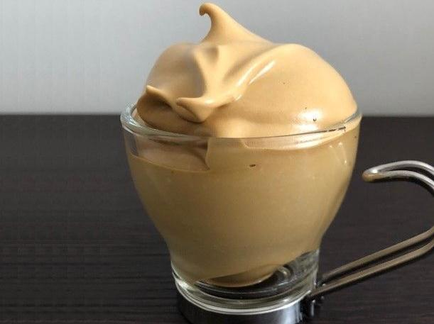

RICETTA DELLA CREMA AL CAFFE
FACILE ED INDOLORE
Procedimento;
Frullare in un frullatore del ghiaccio e del caffè solubile e versare intanto dell'acqua fredda.
Continuare a frullare affinchè il miscuglio diventi omogeneo e cremoso
Ingredienti;
-Caffè solubile
-Cubetti di ghiccio
-Acqua fredda
